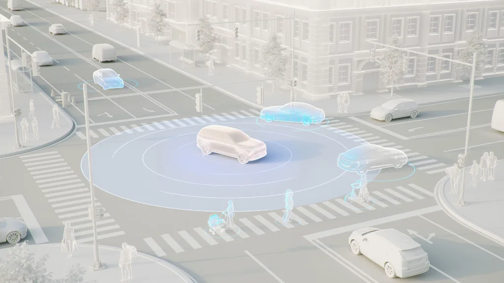
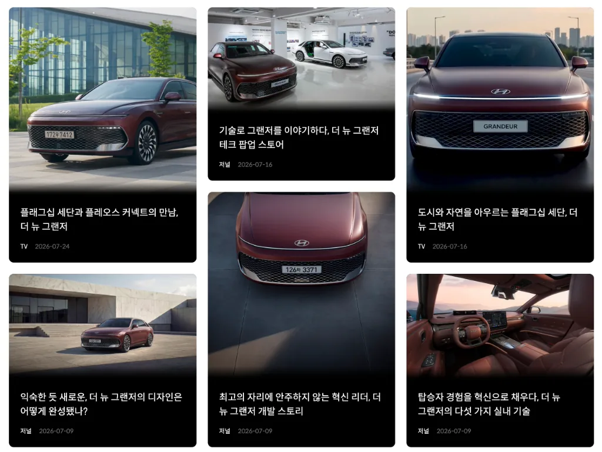
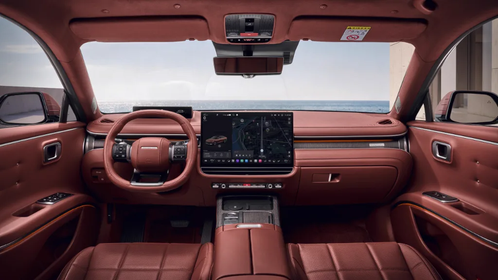

기사 하나 읽다가 멈췄어요. "소프트웨어 중심으로 차를 다시 설계했다"는 구절 때문인데요.
다시 설계했다는 건 뭔가를 버렸다는 뜻이잖아요. 그런데 뭘 버렸는지는 안 나오더라고요.

현대자동차 소프트웨어 중심 구조 및 자율주행 인터페이스 관찰 노트
그리고 왜 하필 지금일까요? 이 기술이 어제 갑자기 생긴 것도 아닌데요.
| 글 제목 | 작성일 |
|---|---|
| └ 현대차가 차를 "다시 설계했다"는데, 뭘 버린 걸까요? | 3월 14일 |
| └ GN8가 SDV라던데 제대로 된 정의가 없네요 | 3월 16일 |
| └ 버튼 없앤 이유를 설명한 회사를 찾았는데, 우리 차가 아니네요 | 4월 12일 |
| └ 내일 인수인데, 아직 이 차를 한 줄로 설명 못 하겠어요 | 4월 17일 |
기사 하나 읽다가 멈췄어요. "소프트웨어 중심으로 차를 다시 설계했다"는 구절 때문인데요.
다시 설계했다는 건 뭔가를 버렸다는 뜻이잖아요. 그런데 뭘 버렸는지는 안 나오더라고요.

현대자동차 소프트웨어 중심 구조 및 자율주행 인터페이스 관찰 노트
그리고 왜 하필 지금일까요? 이 기술이 어제 갑자기 생긴 것도 아닌데요.
GN8가 SDV라고 하던데 기존 제네시스랑 크게 뭔가 달라질 것 같은 느낌이에요. 하지만 GN8에 대해 찾아보니 기능, 소재, 트림에 대한 소개만 많을 뿐 정작 SDV에 대한 구체적인 설명은 보이지 않더라고요.

GN8 주요 보도자료 및 신기술 관련 기사 관찰 노트
아이폰 나왔을 때도 다들 사양만 물어봤었죠. 하지만 그때 진짜 핵심이었던 건 "컴퓨터를 주머니에 넣는다"는 한 줄이었어요.
그 한 줄을 먼저 잡은 사람은 나머지를 굳이 안 외워도 됐거든요.
SDV의 그 핵심 한 줄은 과연 뭘까요? 아직 아무 데서도 못 찾았어요.
알게 된 것 — 물리 버튼을 없앤 이유를 원가가 아니라 "배치를 나중에 바꾸기 위해서"라고 설명한 엔지니어 인터뷰를 찾았어요. 다른 회사 자료지만요.
무엇을 포기했는지 솔직하게 말하는 회사가 있긴 하더라고요.
포기한 걸 당당히 말한다는 건 그만큼 방향성에 확신이 있다는 뜻이겠죠.
3주간 찾던 답에 제일 가까운데, 정작 내 차 얘기가 아니네요...
솔직히 기대되는 건 사실이에요.
다만 왜 아직도 현대차가 뭘 위해서 SDV로 전환했는지 좀 더 구체적으로 알고 싶더라고요.

GN8 관찰 노트 — 차 안에서 마주한 인터페이스와 소프트웨어의 첫인상